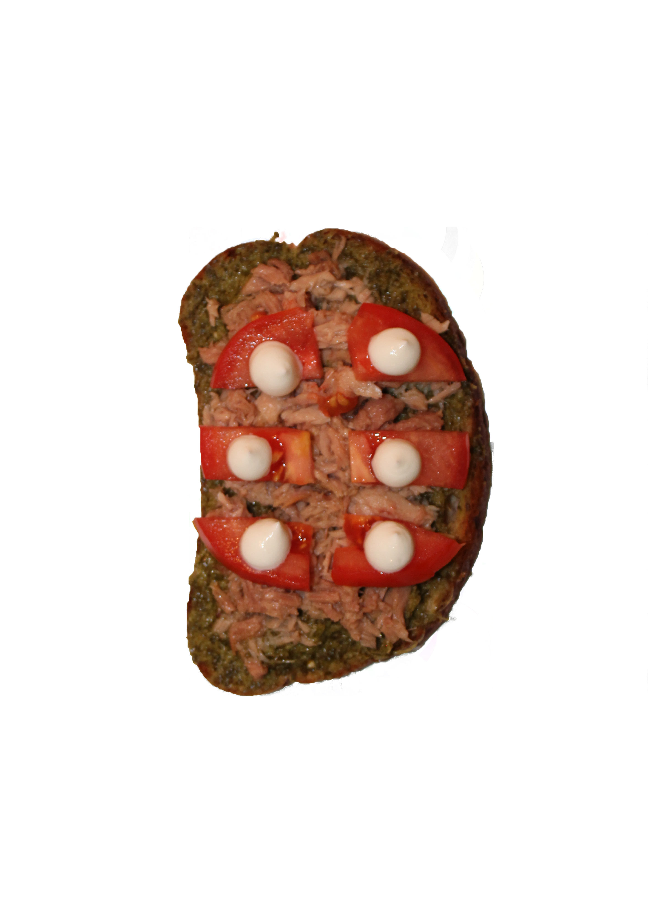

-

כריך שורשים
לרענון אחרי שיעור ארוך
-

כריך תפוח מלוח
שילוב מנצח לבוקר מתוק
-

כריך גינה צהובה
להיות בכיתה ולהרגיש על הדשא
-

כריך משתלם
מקסימום ארוחה, מינימום כסף
-

יום ורוד
כזה לא תמצאו בקפיטריה
-

כריך איטלקי
בשביל להרגיש קצת חו"ל
-

כריך ליום שמשי
כריך בוקר מנצח
-

כריך טבעונות בקלות
ללא רגשות אשמה
-

כריך סלט פירות
מכת אנרגיה בשעה ארבע
המדריך לכריך
מתאימים לכם את הכריך לסיטואציה
מעבר לתוכן העמוד